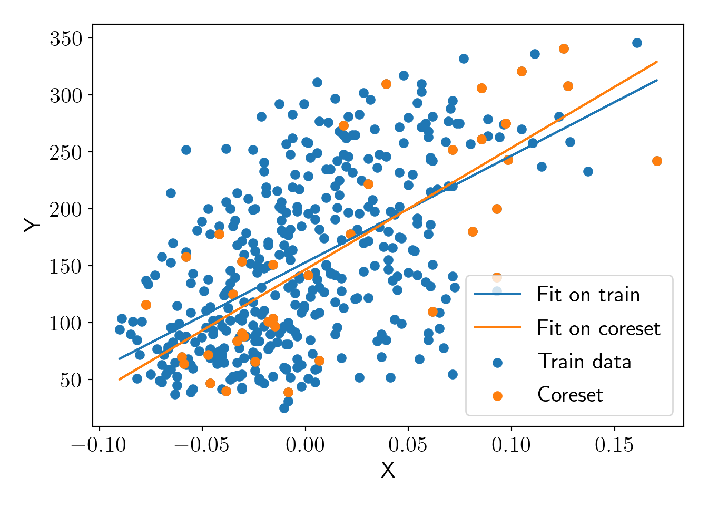
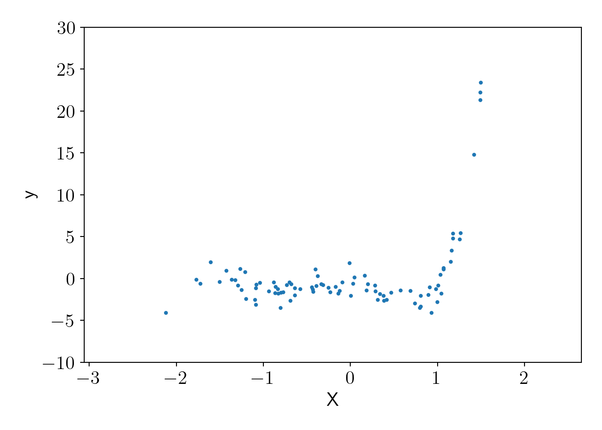
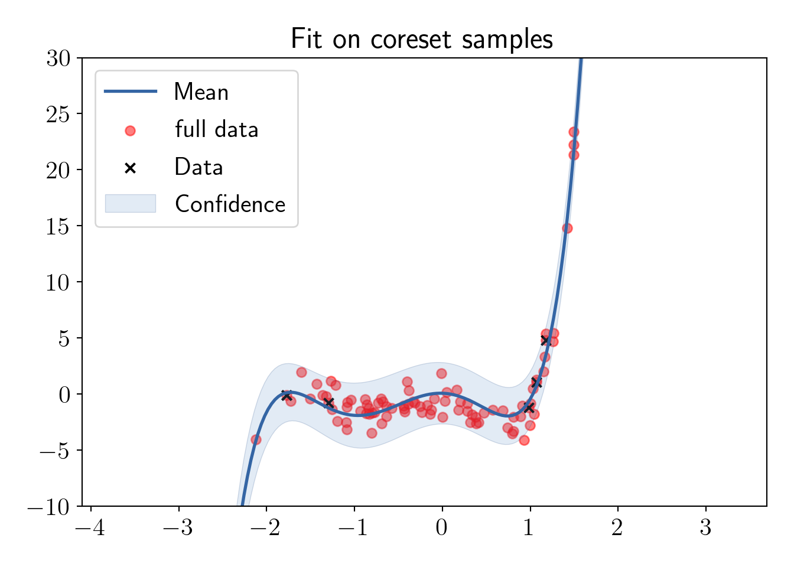

Coresets: 5 Coresets for Linear Regression
We will see one of the methods to select coreset points for linear regression. We calculate “Ridge leverage scores” to create a sampling distribution for coreset selection. The process to calculate sampling distribution \(p(X)\) is as the following.
- \(X_* = \begin{bmatrix}X \\ \lambda I_d\end{bmatrix}\)
- \(U \Sigma V^T = X_*\)
- \(\mathbf{p}(X) = ||U(0:n, :)||_2^2\)
Now, let us implement this in a python function.
from sklearn.linear_model import Ridge
import matplotlib.pyplot as plt
import numpy as np
import pandas as pd
from matplotlib import rc
import warnings
warnings.filterwarnings('ignore')
rc('font', size=16)
rc('text', usetex=True)
def plot_essentials(): # essential code for every plot
hand, labs = plt.gca().get_legend_handles_labels()
if len(hand)>0:
plt.legend(hand, labs);
plt.tight_layout();
plt.show()
plt.close()def get_proba(x, lmd):
x_list = [np.ones(x.shape[0]), x.ravel()]
x_extra = np.vstack(x_list).T
A = np.vstack([x_extra, np.eye(x_extra.shape[1])*np.sqrt(lmd)])
U, S, V = np.linalg.svd(A, full_matrices=False)
U1 = U[:x.shape[0], :]
proba = np.square(U1).sum(axis=1)/np.square(U1).sum(axis=1).sum()
return probaWe will sample the coresets for Scikit-learn diabetes dataset.
5.1 Coresets for linear regression (order=1)
from sklearn.datasets import load_diabetes
X, y = load_diabetes(return_X_y=True)
X = X[:, np.newaxis, 2]
X_train, y_train = X[:-20], y[:-20]
X_test, y_test = X[-20:], y[-20:]
plt.scatter(X_train, y_train, label='Train');
plt.scatter(X_test, y_test, label='Test');
plt.xlabel('X'); plt.ylabel('Y');
plot_essentials();Now, let us visualize sampling probabilities of the train dataset.
lmd = 0.0001
X_proba = get_proba(X_train, lmd);
plt.scatter(X_train, y_train, c=X_proba, label='');
plt.colorbar();
plt.title('Sampling probability distribution over training data');
plt.xlabel('X'); plt.ylabel('Y');
plot_essentials();
Sampling 10% of the training data as a coreset.
np.random.seed(0)
N_core = len(X_train)//10
core_idx = np.random.choice(len(X_train), size=N_core, replace=True, p=X_proba)
X_core = X_train[core_idx]
y_core = y_train[core_idx]Checking fit on original dataset and on coreset.
FullModel = Ridge(alpha=lmd).fit(X_train, y_train)
CoreModel = Ridge(alpha=lmd).fit(X_core, y_core)
plt.scatter(X_train, y_train, label='Train data');
plt.scatter(X_core, y_core, label='Coreset');
y_pred_full = FullModel.predict(X_train);
y_pred_core = CoreModel.predict(X_train);
plt.plot(X_train, y_pred_full, label='Fit on train');
plt.plot(X_train, y_pred_core, label='Fit on coreset');
plt.xlabel('X'); plt.ylabel('Y');
plot_essentials();
Let us do cost comparison to verify if this is an \(\varepsilon\)-coreset. We take \(\varepsilon=0.3\).
eps = 0.3;
FullModelCost = np.square(FullModel.predict(X_train) - y_train).sum()/len(X_train);
CoreModelCost = np.square(CoreModel.predict(X_train) - y_train).sum()/len(X_train);\[ \frac{cost(X,Q^*_C)}{cost(X,Q^*_X)} \le \frac{1+\varepsilon}{1-\varepsilon} \]
We have above relationship 1.02 \(\le\) 1.86, thus we found a valid \(\varepsilon\)-coreset here.
5.2 Coresets for linear regression (order=5)
Let us generate random data using order 5 polynomial kernel.
import GPy
np.random.seed(123)
kernel = GPy.kern.Poly(1, order=5, bias=1, scale=1, variance=1)
sigma_n = 1.1
N = 100
X = np.random.normal(0,1,N).reshape(-1,1)
N = X.shape[0]
cov_matrix = kernel.K(X, X)
cov_matrix += np.eye(N)*sigma_n**2
y_poly = np.random.multivariate_normal(np.zeros(N), cov_matrix).reshape(-1,1)
plt.scatter(X, y_poly,s=5);
plt.xlabel('X');plt.ylabel('y');
plt.ylim(-10,30);
plot_essentials();
Sampling uniform samples and coreset samples.
def get_proba(x, lmd, order=1):
x_list = [np.ones(x.shape[0])]
for i in range(1,order+1):
x_list.append(x.ravel()**i)
x_extra = np.vstack(x_list).T
A = np.vstack([x_extra, np.eye(x_extra.shape[1])*np.sqrt(lmd)])
U, S, V = np.linalg.svd(A, full_matrices=False)
U1 = U[:x.shape[0], :]
proba = np.square(U1).sum(axis=1)/np.square(U1).sum(axis=1).sum()
return proba
def get_coreset(x, y, n, lmd, order, seed):
np.random.seed(seed)
proba = get_proba(x, lmd, order)
idx = np.random.choice(x.shape[0], size=n, p=proba)
return idx
def get_uniform(x, y, n, seed):
np.random.seed(seed)
proba = np.ones(x.shape[0])/x.shape[0]
idx = np.random.choice(x.shape[0], size=n, p=proba)
return idx
lmd = (sigma_n/(kernel.variance)**0.5)**2
n_sample = len(y_poly)//10
order = 5
core_idx = get_coreset(X, y_poly, n_sample, lmd, order, seed=0)
X_core, y_core = X[core_idx], y_poly[core_idx]
uni_idx = get_uniform(X, y_poly, n_sample, seed=0)
X_uni, y_uni = X[uni_idx], y_poly[uni_idx]Checking the fit using the same kernel (without optimizing the hyperparamaters because we have kept them constants for analysis).
Fitting on the uniform samples.
uniGP = GPy.models.GPRegression(X_uni, y_uni, kernel)
uniGP.likelihood.variance = sigma_n**2
fig, ax = plt.subplots();
ax.scatter(X, y_poly, c='r', label='full data', alpha=0.5);
uniGP.plot(ax=ax);
ax.set_ylim(-10,30);
ax.set_title('Fit on uniform samples');
plot_essentials();Fitting on the coreset samples.
coreGP = GPy.models.GPRegression(X_core, y_core, kernel)
coreGP.likelihood.variance = sigma_n**2
fig, ax = plt.subplots();
ax.scatter(X, y_poly, c='r', label='full data', alpha=0.5);
coreGP.plot(ax=ax);
ax.set_ylim(-10,30);
ax.set_title('Fit on coreset samples');
plot_essentials();
5.3 Checking uncertainty in the fit
np.random.seed(0);
# X_new = X.copy()
X_new = np.sort(np.random.normal(2,2,N*3)).reshape(-1,1);
s = 20;
# Full data
train_X, train_y = X.copy(), y_poly.copy()
tmpGP = GPy.models.GPRegression(train_X, train_y, kernel)
tmpGP.likelihood.variance = sigma_n**2
_, var = tmpGP.predict(X_new)
std2 = np.sqrt(var)*2
_ = plt.plot(X_new, std2, color='k', label='full data');
# Uniform samples
train_X, train_y = X[uni_idx], y_poly[uni_idx]
tmpGP = GPy.models.GPRegression(train_X, train_y, kernel)
tmpGP.likelihood.variance = sigma_n**2
_, var = tmpGP.predict(X_new)
std2 = np.sqrt(var)*2
_ = plt.plot(X_new, std2, color='r', label='uniform');
# Coreset samples
train_X, train_y = X[core_idx], y_poly[core_idx]
tmpGP = GPy.models.GPRegression(train_X, train_y, kernel)
tmpGP.likelihood.variance = sigma_n**2
_, var = tmpGP.predict(X_new)
std2 = np.sqrt(var)*2
_ = plt.plot(X_new, std2, color='g', label='coreset');
plt.ylim(0,7);
plt.xlabel("X");plt.ylabel("Uncertainty");
plot_essentials();We can see that uncertainty for the model fitted on coreset is closely matching with the model fitted on full dataset. Uncertainty is high for uniform sampling in the end regions because we have low density of input \(X\) in that region and thus points in those region are less likely to be included in the uniform samples. ## Comparing uncertainty with best coreset and uncertainty sampling (active learning)
Sampling from an active learning technique called uncertainty sampling.
all_idx = list(range(N))
train_idx = [0]
pool_idx = all_idx.copy()
for i in train_idx:
pool_idx.remove(i)
sidx = np.argsort(X.ravel())
def update():
# Computation
train_X, train_y = X[train_idx], y_poly[train_idx]
tmpGP = GPy.models.GPRegression(train_X, train_y, kernel)
tmpGP.likelihood.variance = sigma_n**2
_, var = tmpGP.predict(X[pool_idx])
meanall, varall = tmpGP.predict(X)
std2all = np.sqrt(varall)*2
next_idx = pool_idx[np.argmax(var)]
# Updating
train_idx.append(next_idx)
pool_idx.remove(next_idx)
for i in range(15):
update()np.random.seed(0);
X_new = np.sort(np.random.normal(2,2,N*3)).reshape(-1,1);
s = 20
# Full data
train_X, train_y = X.copy(), y_poly.copy()
tmpGP = GPy.models.GPRegression(train_X, train_y, kernel)
tmpGP.likelihood.variance = sigma_n**2
_, var = tmpGP.predict(X_new)
std2 = np.sqrt(var)*2
_ = plt.plot(X_new, std2, color='k', label='full data');
# Uniform samples
train_X, train_y = X[uni_idx], y_poly[uni_idx]
tmpGP = GPy.models.GPRegression(train_X, train_y, kernel)
tmpGP.likelihood.variance = sigma_n**2
_, var = tmpGP.predict(X_new)
std2 = np.sqrt(var)*2
_ = plt.plot(X_new, std2, color='r', label='uniform');
# Coreset samples
train_X, train_y = X[core_idx], y_poly[core_idx]
tmpGP = GPy.models.GPRegression(train_X, train_y, kernel)
tmpGP.likelihood.variance = sigma_n**2
_, var = tmpGP.predict(X_new)
std2 = np.sqrt(var)*2
_ = plt.plot(X_new, std2, color='g', label='coreset');
# Best core
best_core = np.argsort(get_proba(X, lmd, order=5))[::-1][:n_sample]
train_X, train_y = X[best_core], y_poly[best_core]
tmpGP = GPy.models.GPRegression(train_X, train_y, kernel)
tmpGP.likelihood.variance = sigma_n**2
_, var = tmpGP.predict(X_new)
std2 = np.sqrt(var)*2
_ = plt.plot(X_new, std2, color='b', label='best coreset (???)')
# Active learning samples
train_X, train_y = X[train_idx], y_poly[train_idx]
tmpGP = GPy.models.GPRegression(train_X, train_y, kernel)
tmpGP.likelihood.variance = sigma_n**2
_, var = tmpGP.predict(X_new)
std2 = np.sqrt(var)*2
_ = plt.plot(X_new, std2, color='y', label='Uncert. Sampling')
plt.ylim(0,5);
plt.xlabel("X");plt.ylabel("Uncertainty");
plot_essentials();Interpretation of the above plot is as the following,
- Models trained on full dataset, a coreset and dataset generated by uncertainty sampling have more or less similar uncertainty.
- Model fitted on \(n'\) points that have highest probability in coreset sampling distribution have higher uncertanty in central region. This is because we have higher density of datapoints in the central region and all points with high probability lie on both ends. This suggests that, it is not a good strategy to choose highly probable points as coresets. We must sample the points properly with a sampling technique according to the sampling distribution.
- We see that uncertainty sampling results in best uncertainty here that is closest to oracle (full data fit). This raises following questions for the future research.
5.4 Questions
What can we say about uncertainty in the fit while fitting the model on the coreset points?
We saw that uncertainty sampling can sample the points that help in reducing uncertainty the most so can we say they can produce better coresets?